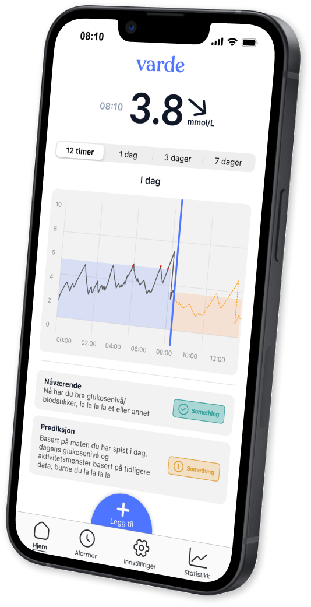
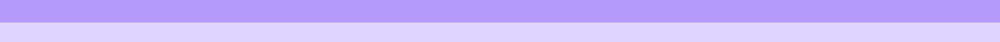

Neste generasjons Diabetes tech
Under utvikling...

Om oss
Varde tech AS utvikler avanserte digitale løsninger for å støtte personer med diabetes i å håndtere glukosenivåene trygt, forutsigbart og effektivt. Med en unik kombinasjon av teknologisk ekspertise og mange års personlig erfaring med diabetes, er teamet vårt dedikert til å skape revolusjonerende verktøy som forbedrer livskvaliteten til personer med diabetes.
1
Vårt Mål
Vårt mål er å forbedre hverdagen til personer med diabetes ved å levere en intuitiv og intelligent løsning som gir bedre kontroll over glukosenivået, reduserer komplikasjoner og styrker brukerens livskvalitet.
2
Hva er Varde T1?
Varde T1 er en app som benytter vår egenutviklede kunstige intelligens for å forutsi glukosenivåer basert på omfattende helsedata. Appen gir skreddersydde anbefalinger om insulin og karbohydrater, og ved å ta hensyn til flere faktorer, tilbyr den personlige innsikter som hjelper brukerne med å håndtere sin diabetes trygt og enkelt.

Teamet
Teamet i Varde forener ekspertise fra ulike fagområder for å realisere vår visjon om å forbedre helsen til personer med diabetes, ved å tilby en innovativ KI-løsning som bidrar til å forebygge langtidskomplikasjoner.
Blogg
Utforsk våre blogginnlegg for å lese om høydepunktene fra oss i Varde Tech.